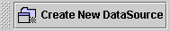
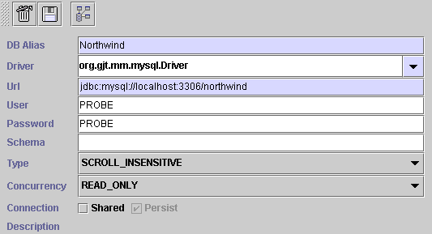
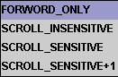
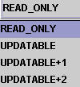

|
|
Chapter 4 |
|
¡@
Before you design your application, you have to create new Datasource. jLIVE Builder support any well-known and widely-used database. Such as ORACLE,MSSQL,DB2,SYBASE......
¡@
¡@
Please click the button " Create New DataSource " which looks like below image to create datasource.

¡@
You can delete a database or save or test db connection. But please take a notice of that every time you change the setting, be sure to click save button.

DB Alias : The logical name of the database, It is user defined.
JDBC to connect mySQL
DB Alias : NorthWind
Driver : org.gjt.mm.mysql.Driver
Url : jdbc:mysql://HostName:3306/DatabaseName
¡@
JDBC to connect ORACLE
DB Alias : ORACLE
Driver : oracle.jdbc.driver.OracleDriver
Url : jdbc:oracle:thin:@HostName:1521:DatabaseName
¡@
iNet MSSQL2000 Driver
DB Alias : MSINET
Driver : com.inet.tds.TdsDriver
Url : jdbc:inetdae:HostName:1433?database=DatabaseName&charset=Cp950* Cp950 : Key in the char set (Options), for chinese please type Cp950 or Ms950 ( for Japanese please type JIS0212 )
¡@
ODBC to connect Access
DB Alias : ODBC_ACCESS
Driver : sun.jdbc.odbc.JdbcOdbcDriver
Url : jdbc:odbc:ACCESS_ODBC_Name¡@


¡@
|
|
|
|
Copyright © 2001~ 2004 Probe.com.tw . All Rights Reserved.
Questions, comments, and suggestions to Service@probe.com.tw